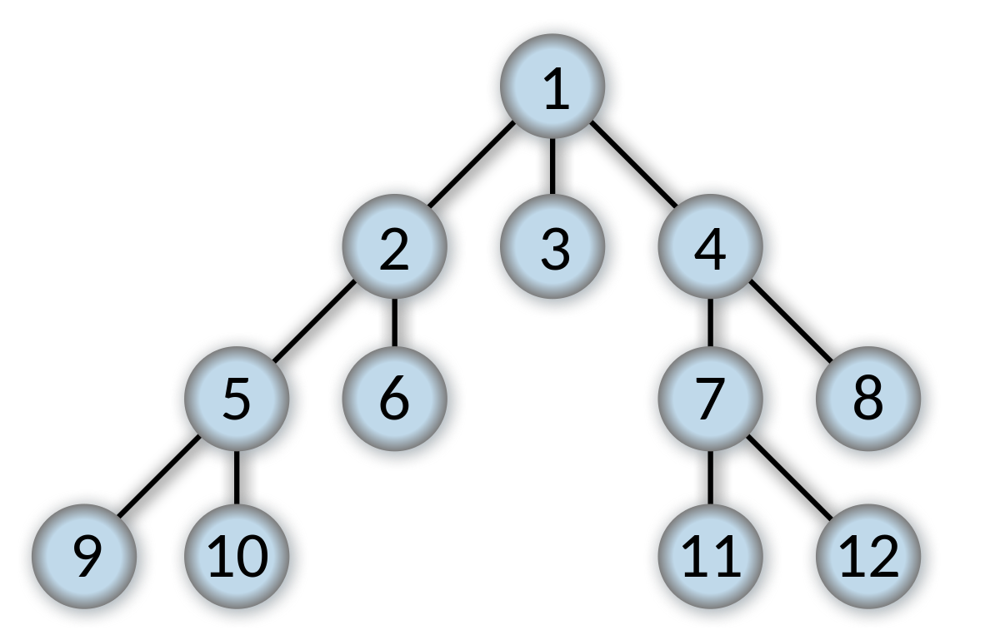
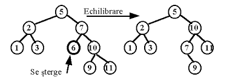

Arborii folosesc mai multe tipuri de algoritmi
Algoritmul de Inserare în Arbori Binari de Căutare (Binary Search Tree Insertion)
Descriere:
Inserarea unui nod într-un arbore binar de căutare (BST) astfel încât arborele să rămână sortat. Datorită structurii sale, căutarea unui element se face foarte eficient.Pași:
- Începe la rădăcina arborelui.
- Compară valoarea nodului care trebuie inserat cu valoarea nodului curent.
- Dacă valoarea este mai mică și subarborele stâng este gol, inserează nodul acolo; altfel, repetă pentru subarborele stâng.
- Dacă valoarea este mai mare și subarborele drept este gol, inserează nodul acolo; altfel, repetă pentru subarborele drept.

Algoritmul de Parcurgere în Adâncime (Depth-First Search - DFS)
Descriere:
Parcurgerea unui arbore explorând cât mai departe fiecare ramură înainte de a reveni.Ex:Preordine 4, 3, 5, 2, 6, 1, 8, 7, 10, 9, 11, 12
Inordine: 1, 2, 3, 4, 5, 6, 7, 8, 9, 10, 11, 12
Postordine: 4, 5, 3, 6, 2, 8, 10, 11, 12, 9, 7, 1
Tipuri:
- Preordine (Preorder): Vizitează nodul curent, apoi parcurge subarborele stâng și subarborele drept. (RSD)
- Inordine (Inorder): Parcurge subarborele stâng, vizitează nodul curent, apoi parcurge subarborele drept.(SRD)
- Postordine (Postorder): Parcurge subarborele stâng, parcurge subarborele drept, apoi vizitează nodul curent.(SDR)
Traversarea în Lățime (BFS - Breadth-First Search)
Descriere:
BFS este o metodă de traversare a unui arbore sau a unui grafic, unde se pornește de la rădăcină și se explorează toate nodurile la nivelul curent înainte de a trece la nivelul următor. Într-un arbore binar, această traversare se face de la stânga la dreapta, nivel cu nivel.BFS:1, 2, 3, 4, 5, 6, 7, 8, 9, 10, 11, 12
Cum funcționează?
- Se creează o coadă goală (queue) pentru a ține evidența nodurilor care trebuie explorate și se adaugă rădăcina.
- Cât timp coada nu este goală se scoate primul nod din coadă, se marchează ca vizitat nodul,se ia valoarea și se adaugă vecinii.
- Algoritmul se termină atunci când toate nodurile accesibile de la nodul de pornire au fost vizitate, iar coada este goală..

Echilibrarea unui Arbore AVL
Pași:
Calculul Factorului de Balanță: Diferența dintre înălțimea subarborelui stâng și înălțimea subarborelui drept. Valorile acceptabile sunt -1, 0, și +1.Detectarea Dezechilibrului: După fiecare inserare sau ștergere, verificăm factorii de balanță. Dacă un nod are un factor de balanță de +2 sau -2, arborele este dezechilibrat.
Rotiri pentru Reechilibrare:
Rotire simplă la dreapta: Folosită când subarborele stâng este prea înalt (factor de balanță +2) și copilul său stâng are factor de balanță +1 sau 0.
Rotire simplă la stânga: Folosită când subarborele drept este prea înalt (factor de balanță -2) și copilul său drept are factor de balanță -1 sau 0.
Rotire stânga-dreapta: Folosită când subarborele stâng este prea înalt (factor de balanță +2) și copilul său stâng are factor de balanță -1.
Rotire dreapta-stânga: Folosită când subarborele drept este prea înalt (factor de balanță -2) și copilul său drept are factor de balanță +1.
Descriere:
Echilibrarea unui arbore AVL (Adelson-Velsky and Landis) este un proces prin care se menține balanța înălțimii arborelui pentru a asigura eficiența operațiunilor de inserare, ștergere și căutare. Arborele AVL este un tip de arbore binar de căutare în care diferența dintre înălțimile subarborilor oricărui nod nu este mai mare de 1.
